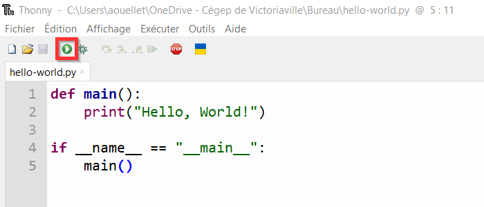
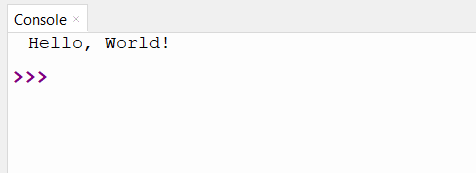

La syntaxe de base de Python
Objectifs de la section
Déclarer de la fonction main et le point d’entrée du programme
Exécuter les opérations de lecture et d'écriture en console
Manipuler les variables représentant des nombres entiers
Déclarer et concaténer des chaînes de caractère
Temps requis
30 minutes
Le squelette d'un programme Python
Dans l'écriture d'un programme en Python, il y a deux grandes familles d'instruction :
- Les instructions de déclaration ( allô j'existe !) qui servent à définir un élément; et
- Les instructions impératives qui réalise des opérations.
Prenons la structure du programme très simple suivant.
| Structure minimale d'un programme Python | |
|---|---|
La première ligne def main(): indique que l'on définit une fonction appelée main. Le symbole deux points ( : ) en python introduit un bloc de code. Tout ce qui suit le deux-points et qui est plus indenté est dans le bloc de code. Donc ici la fonction main contient tout ce qui suit est qui est indenté d'un niveau ou plus.
La quatrième ligne if __name__ == "__main__": représente le point d'entrée du programme. C'est une ligne de code spéciale qui permet à l'interpréteur de Python de savoir où commencer à lire le code. La cinquième ligne main() est une instruction impérative d'exécuter le code définit dans la structure main.
Commentaire
Toutes les lignes de code qui commencent par # sont des commentaires. Un commentaire n'est pas interprété par Python (en fait il est simplement ignoré), mais permet à nous, êtres humains, d'ajouter des compléments d'information dans le code qui s'avèrent souvent fort utile pour en comprendre le sens.
Un niveau d'indentation en Python correspond à 4 espaces. La plupart des IDE remplacent une tabulation Tab par 4 espaces. Il est aussi possible de conserver le caractère tabulation (même si ce n'est pas recommandé), il faut simplement que la façon d'indenter soit uniforme dans un fichier.
Écrire dans la console
La fonction print permet d'afficher une chaîne de caractère dans la console. On délimite le contenu d'une chaîne de caractère avec des guillemets anglais ( " ). Le premier programme en information est le programme appelé Hello, World ! qui affiche simplement cette salutation.
| Programme Hello, World! | |
|---|---|
Mettre un guillemet dans une chaîne de caractère
Comme le caractère guillemet ( " ) représente la limite de la chaîne, il faut ajouter une barre oblique inverse (backslash) devant pour indiquer que le guillemet ne signifie pas la fin de la chaîne. C'est ce que l'on appelle « échapper » le caractère.
Chaîne valide : "Comme le dit si bien le grand Homer Simpson : \"Where is the 'any' key ?\""
Chaîne erronée : "Comme le dit si bien le grand Homer Simpson : "Where is the 'any' key ?""
Guillemets simples ou doubles
Python supporte de façon interchangeable les guillemets anglais simples (caractère de l'apostrophe) ou doubles pour les chaînes de caractère. Il est souvent plus simple d'utiliser les guillemets doubles, car sinon il faut échapper toutes les apostrophes.
Chaîne valide : 'Comme le dit si bien le grand Homer Simpson : "Where is the \'any\' key ?"'
Dans plusieurs autres langages de programmation, les guillemets simples ou doubles ont une signification différente et les guillemets doubles servent à traiter les chaînes de caractères. Utiliser cette convention peut aussi faciliter le passage à d'autres langages de programmation.
Exécuter un programme

{kind=link}
Pour exécuter un programme, on écrit d'abord le script (duh...) dans la partie supérieure à gauche de l'interface. Il est possible de sauvegarder ou d'ouvrir le script d'un programme (attention, ici on sauvegarde les instructions et non le résultat !).
Pour exécuter les inscriptions, on lance avec la flèche verte (dans le carré rouge sur la capture d'écran précédente). Le résultat s'affiche dans la section du bas (appelée console).

{kind=link}
Il est aussi possible de lancer un programme python sans IDE. Pour se faire il faut ouvrir une invite de commande (cmd ou PowerShell dans Windows ou dans le terminal pour Linux ou Mac).
Il faut d'abord se positionner au bon endroit sur le disque avec la commande cd puis exécuter le programme python (ou simplement py) en lui donnant comme argument le nom du fichier python.
La commande python n'est pas trouvée
Vérifier la variable PATH et assurez-vous que l'exécutable de python y figureé
Les variables et les identificateurs
Les variables en Python servent à contenir l'information d'un type donné. Les variables possèdent toutes un identificateur qui est utilisé pour les manipuler et accéder à leur contenu. Les valeurs contenues dans les variables peuvent changer durant l'exécution d'un programme, mais elles doivent toujours être de même type dans une même variable.
Identificateurs
Plusieurs abstractions nécessitent d'être nommées pour y faire appel dans le code (comme les variables ou les fonctions). Le langage Python définit 4 règles pour la façon de choisir les identificateurs. Le non-respect de ces règles entraîne des erreurs dans l'exécution du script.
Tous les identificateurs en Python doivent respecter ces quatre règles :
- Ils commencent par une lettre majuscule, minuscule ou un trait de soulignement;
- Les identificateurs sont composés de lettres, de chiffres et de traits de soulignement ( _ );
- Les identificateurs sont sensibles à la casse (a \(\neq\) A); et
- Les identificateurs doivent être différents des mots clés réservés par le langage.
Mots clés réservés dans le langage Python
False await else import pass
None break except in raise
True class finally is return
and continue for lambda try
as def from nonlocal while
assert del global not with
async elif if or yield
Le choix d'un identificateur
Tous les identificateurs doivent être significatifs. Par exemple, si l'on veut conserver en mémoire une information sur la concentration d'acide acétique d'une solution, la variable qui contient cette information peut s'appeler concentration, concentration_acide ou concentration_CH3COOH par exemple. Les identificateurs comme x, conc_acide, ma_concentration_d_acide_acetique ou bob ne renseignent pas sur la signification de cette variable ou sont inutilement longs.
Règles de style pour les identificateurs de variables
Pour l'écriture d'un identificateur de variable, il faut respecter les 2 règles :
- On n'utilise pas de lettres majuscules dans les noms de variables, sauf si la lettre majuscule à un sens important; et
- Si l'identificateur comporte plusieurs mots, on place un trait de soulignement ( _ ) entre chaque mot (c'est ce qui s'appelle le snake_case).
Le non-respect de ces règles n'entraîne pas d'erreur dans l'exécution du script, mais diminue la lisibilité du code.
Déclarer une variable de type numérique et effectuer des opérations arithmétiques
Pour déclarer une variable, on lui assigne un identificateur valide et puis on indique le symbole d'égalité ( = ) puis la valeur initiale de la variable.
Les opérations arithmétiques suivantes peuvent être appliquées sur les types numériques.
| Opération | Opérateur | Exemple d'utilisation |
|---|---|---|
| Addition | + | 1 + 1 # Résultat : 2 |
| Soustraction | - | 2 - 1 # Résultat : 0 |
| Multiplication | * | -1 * 2 # Résultat : -2 |
| Exponentiation | ** | 2 ** 3 # Résultat : 8 |
| Division | / | 3 / 2 # Résultat : 1.5 |
| Division entière | // | 11 // 3 # Résultat : 3 |
| Modulo (reste de la division entière) | % | 11 % 3 # Résultat : 2 |
Entiers et décimaux
Les nombres décimaux (à virgule) sont traités différemment des nombres entiers et il faut faire attention quand on les utilise, car cela vient avec certaines implications. Les nombres décimaux sont couverts dans la prochaine section.
Par exemple, la division entière et le modulo peuvent se comporter de façon inattendue avec des nombres décimaux.
Déclarer une variable de type chaîne de caractères et concaténer des chaînes de caractères
Déclarer une variable de type chaîne de caractères est similaire à déclarer une variable entière. On donne à la variable un identificateur puis le symbole d'égalité et la valeur de la chaîne en guillemets anglais.
Concaténation de chaînes
L'opération de concaténation permet de combiner des chaînes de caractères. On utilise l'opérateur d'addition ( + ) pour exprimer dans le langage Python l'idée de la concaténation.
texte_accueil = "Bonjour"
nom_personne_1 = "Alice"
bonjour_alice = texte_accueil + nom_personne_1
print(bonjour_alice) # Affiche BonjourAlice
On voit que le résultat BonjourAlice n'est pas exactement conforme à nos attentes. Tous les caractères (espaces, retour à la ligne, tabulations) doivent être ajoutés manuellement à la chaîne de caractères pour s'afficher (et tous les caractères ajoutés s'affichent...).
| Caractère d'espacement | Symbole |
|---|---|
| Espace | " " |
| Tabulation | "\t" |
| Retour à la ligne | "\n" |
Afficher des variables numériques dans une chaîne de caractères
La ligne de code suivante provoque une erreur lors de son exécution.
Erreur
TypeError: can only concatenate str (not "int") to str
Pour régler cette erreur, il faut utiliser la fonction str (la version raccourcie du terme string, chaîne de caractères).
Lire une information de la console
Pour récupérer une information saisie par la personne utilisatrice, on utilise la fonction input() qui lit ce qui est entré dans la console jusqu'à symbole de retour à la ligne (touche Enter). Il faut stocker le résultat de la fonction dans une variable pour pouvoir l'utiliser par la suite.
Le résultat de input() est toujours une chaîne de caractère. Par exemple, si l'on entre « 5 » au clavier, la valeur est stockée dans la chaîne contenant le caractère 5 et non commen la valeur numérique 5. Pour transformer une chaîne de caractère en valeur numérique entière, il faut utiliser la fonction int() (la version raccourcie du terme integer, entier).
saisie = input() # Imaginons que 1 est entré, alors saisie
# contient "1"
valeur = int(saisie) # valeur contient maintenant la valeur
# numérique 1
saisie + 1 # Erreur, on ne peut pas additionner une chaîne
# et un entier 👎
valeur + 1 # Tout à fait valide, on peut additionner deux
# entiers 👍
Un premier programme
Demandez à une personne utilisatrice de saisir deux nombres entiers dans la console, multipliez ces nombres et affichez le produit obtenu.
Solution
Concepts clés de la section
déclaration- opération dans lequelle on indique dans le langage de programmation l'existence d'une certaine structure (variable, fonction...)
indentation- espace ajouté devant une ligne. En python l'idententation est un groupe de quatre espaces ou d'une tabulation (elle doit être constante dans un fichier). On parle de niveaux d'indentation lorsque ajoute plusieurs groupe de quatre espaces ou tabulations.
point d'entrée- premier élément du programme qui est exécuté.
variable- abstraction qui représente une donnée atomique (nombre entier, décimal, chaîne de caractère...). Chaque variable peut être possède un identificateur unique.
Les fonctions vues dans cette section
int- converti une chaîne de caractères en entier.
input- lit une chaîne de caractères dans la console.
main- représente le point d'entrée du programme.
print- affiche une chaîne de caractères dans la console.
str- retourne la représentation d'une variable sous forme de chaîne de caractères.